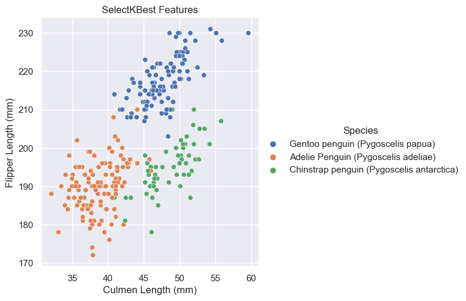
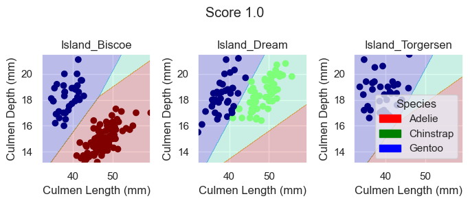

import pandas as pd
import numpy as np
from matplotlib import pyplot as plt
from sklearn.preprocessing import LabelEncoder
import warnings
warnings.filterwarnings('ignore')
# Load training data
train_url = "https://raw.githubusercontent.com/middlebury-csci-0451/CSCI-0451/main/data/palmer-penguins/train.csv"
train = pd.read_csv(train_url)
Classifying Palmer Penguins
In this blog post, we are going to use a simplified, but standard machine learning workflow to determine which three features (two quantitative and one qualitative) will allow us to confidently determine the species of a penguin.
Download Training Data
First, we download our given training data.
Prepare Training Data
Next, we tidy up our data. We remove any columns that are irrelevant to determining the species of a penguin and modify any qualitative features (e.g. sex, clutch completion, island), so that they are represented through numerical values instead of strings, since strings are difficult to quantify and work with.
le = LabelEncoder()
le.fit(train["Species"])
"""
Prepare qualitative data and mark species as labels
"""
def prepare_data(df):
df = df.drop(["studyName", "Sample Number", "Individual ID", "Date Egg", "Comments", "Region"], axis = 1)
df = df[df["Sex"] != "."]
df = df.dropna()
y = le.transform(df["Species"])
df = df.drop(["Species"], axis = 1)
df = pd.get_dummies(df)
return df, y
# Prepare training data
X_train, y_train = prepare_data(train)Explore: Feature Selection
Now that we have prepared our training data, we want to figure our which three features of the data (two quantitative and one qualitative) will allow a model to achieve 100% testing accuracy when trained on those features.
The first way in which we tried to select these features was through the SelectKBest and f_classif functions in the sklearn.feature_selection package.
# Resource: https://www.datatechnotes.com/2021/02/seleckbest-feature-selection-example-in-python.html
from sklearn.feature_selection import SelectKBest, f_classif
all_qual_cols = ["Island_Biscoe", "Island_Dream", "Island_Torgersen", "Clutch Completion_No", "Clutch Completion_Yes", "Sex_FEMALE", "Sex_MALE"]
all_quant_cols = ['Culmen Length (mm)', 'Culmen Depth (mm)', 'Flipper Length (mm)', 'Body Mass (g)']
# Pick quantatative features
X_quant = X_train[all_quant_cols]
quant_select = SelectKBest(f_classif, k=2).fit(X_quant, y_train)
mask = quant_select.get_support()
quant_names = X_quant.columns[mask]
# Pick qualatative features
X_qual = X_train[all_qual_cols]
qual_selected = SelectKBest(f_classif, k=3).fit(X_qual, y_train)
mask = qual_selected.get_support()
qual_names = X_qual.columns[mask]
features = np.concatenate((quant_names, qual_names))print(f"quant_names: {quant_names}")
print(f"qual_names: {qual_names}")
print(f"features: {features}")quant_names: Index(['Culmen Length (mm)', 'Flipper Length (mm)'], dtype='object')
qual_names: Index(['Island_Biscoe', 'Island_Dream', 'Island_Torgersen'], dtype='object')
features: ['Culmen Length (mm)' 'Flipper Length (mm)' 'Island_Biscoe' 'Island_Dream'
'Island_Torgersen']When we inspect the features SelectKBest chose based on the f_classif score function, we see that it found the quantative Culmen Length (mm) and Flipper Length (mm) features and qualitative Island feature to be our most useful features with the highest scores.
Since our data doesn’t have too many features, another way in which we could have selected features was through an exhaustive search that uses the combinations function from the itertools package. To guard ourselves from overfitting issues, we use cross validation throughout this process with LogisticRegression as our model.
from itertools import combinations
from sklearn.linear_model import LogisticRegression
from sklearn.model_selection import cross_val_score
all_qual_cols = ["Island", "Clutch", "Sex"]
all_quant_cols = ['Culmen Length (mm)', 'Culmen Depth (mm)', 'Flipper Length (mm)', 'Body Mass (g)']
# Create dataframe to better inspect the scores
pd.set_option('max_colwidth', 100)
scores_df = pd.DataFrame(columns=['Columns', 'Score'])
# Go through possible combinations of features and train model on them
# Using 1 qualitative and 2 quantiative
for qual in all_qual_cols:
qual_cols = [col for col in X_train.columns if qual in col ]
for pair in combinations(all_quant_cols, 2):
cols = list(pair) + qual_cols
# Using logistic regression for modeling
LR = LogisticRegression()
# Incorportating cross validation
cv_mean_score = cross_val_score(LR, X_train[cols], y_train, cv=10).mean()
scores_df = scores_df.append({'Columns': cols, 'Score': cv_mean_score.round(3)}, ignore_index=True)
scores_df = scores_df.sort_values(by='Score', ascending=False).reset_index(drop=True)features = scores_df.iloc[0,0]
features['Culmen Length (mm)',
'Culmen Depth (mm)',
'Island_Biscoe',
'Island_Dream',
'Island_Torgersen']We see that the exhaustive search also found the qualitative Island feature to be most useful. We can further inspect why this qualitative Island feature was chosen over Sex and Clutch Completion using functions like groupby and aggregate from the pandas package.
"""
Resources:
https://jakevdp.github.io/PythonDataScienceHandbook/03.08-aggregation-and-grouping.html
https://www.geeksforgeeks.org/python-pandas-dataframe-reset_index/
https://towardsdatascience.com/interesting-ways-to-select-pandas-dataframe-columns-b29b82bbfb33
https://sites.ualberta.ca/~hadavand/DataAnalysis/notebooks/Reshaping_Pandas.html
"""
# Group the penguins by species and island, and count the number of occurrences
counts = train.groupby(['Species', 'Island']).size().reset_index(name='count')
# Group the penguins by island and compute the total count for each island
island_totals = counts.groupby('Island')['count'].sum().reset_index(name='total')
# Merge the counts and island_totals
results = pd.merge(counts, island_totals, on='Island')
# Compute the percentage
results['percentage'] = results['count'] / results['total'] * 100
# Edit results dataframe so that it only contains the Island, Species and percentage
results = results[['Island', 'Species', 'percentage']]
# Arrange results to have islands as columns and species as rows
results = results.pivot(index='Species', columns='Island', values='percentage').round(2)
print(results)Island Biscoe Dream Torgersen
Species
Adelie Penguin (Pygoscelis adeliae) 25.74 42.27 100.0
Chinstrap penguin (Pygoscelis antarctica) NaN 57.73 NaN
Gentoo penguin (Pygoscelis papua) 74.26 NaN NaNcounts = train.groupby(['Species', 'Sex']).size().reset_index(name='count')
sex_totals = counts.groupby('Sex')['count'].sum().reset_index(name='total')
results = pd.merge(counts, sex_totals, on='Sex')
results['percentage'] = results['count'] / results['total'] * 100
results = results[['Sex', 'Species', 'percentage']]
results = results.pivot(index='Species', columns='Sex', values='percentage').round(2)
results = results.drop(columns='.')
print(results)Sex FEMALE MALE
Species
Adelie Penguin (Pygoscelis adeliae) 44.53 40.44
Chinstrap penguin (Pygoscelis antarctica) 22.66 19.85
Gentoo penguin (Pygoscelis papua) 32.81 39.71counts = train.groupby(['Species', 'Clutch Completion']).size().reset_index(name='count')
clutch_totals = counts.groupby('Clutch Completion')['count'].sum().reset_index(name='total')
results = pd.merge(counts, clutch_totals, on='Clutch Completion')
results['percentage'] = results['count'] / results['total'] * 100
results = results[['Clutch Completion', 'Species', 'percentage']]
results = results.pivot(index='Species', columns='Clutch Completion', values='percentage').round(2)
print(results)Clutch Completion No Yes
Species
Adelie Penguin (Pygoscelis adeliae) 37.93 43.50
Chinstrap penguin (Pygoscelis antarctica) 37.93 18.29
Gentoo penguin (Pygoscelis papua) 24.14 38.21When we inspect the qualitative features in this way, we see that each island has at most two different penguin species that live there. For the Sex and Clutch Completion features, however, we see that it’s harder to differentiate the species based on those values for it could be any of the three species.
Looking back at our exhaustive search feature results, we also see, however, that it found a different pair of quantatative features with a higher sore. It found Culmen Depth (mm) and Culmen Length to be more useful features.
To figure out whether the SelectKBest Flipper Length (mm) and Culmen Length features or exhaustive search features Culmen Depth (mm) and Culmen Length (mm) are the better pair of quantitative features, let’s inspect what they look like when graphed using the seaborn package.
import seaborn as sns
sns.set_theme()
sns.relplot(
data=train,
x="Culmen Length (mm)", y='Flipper Length (mm)', hue="Species"
).set(title = "SelectKBest Features")
sns.relplot(
data=train,
x="Culmen Length (mm)", y="Culmen Depth (mm)", hue="Species"
).set(title = "Exhaustive Search Features")<seaborn.axisgrid.FacetGrid at 0x157babbb0>

Based on these graphs, it looks like Culmen Depth (mm) and Culmen Length (mm) may be the better quantative options for it looks like they have less overlap among their species. In other words, it’s more easily separable and distinguishable.
To summarize when training our models, we will use the quantitative Culmen Depth and Culmen Length features and qualitative Island feature.
Explore: Modeling
Now that we have chosen our features, we can begin to train different models using our training data. In this blog post, we explore the models of DecisionTreeClassifier, RandomForestClassifier, and LogisticRegression and use the plot_regions method below to visualize our decision regions.
from matplotlib.patches import Patch
from mlxtend.plotting import plot_decision_regions
from matplotlib import pyplot as plt
import numpy as np
def plot_regions(model, X, y):
x0 = X[X.columns[0]]
x1 = X[X.columns[1]]
qual_features = X.columns[2:]
fig, axarr = plt.subplots(1, len(qual_features), figsize = (7, 3))
# create a grid
grid_x = np.linspace(x0.min(),x0.max(),501)
grid_y = np.linspace(x1.min(),x1.max(),501)
xx, yy = np.meshgrid(grid_x, grid_y)
XX = xx.ravel()
YY = yy.ravel()
for i in range(len(qual_features)):
XY = pd.DataFrame({
X.columns[0] : XX,
X.columns[1] : YY
})
for j in qual_features:
XY[j] = 0
XY[qual_features[i]] = 1
p = model.predict(XY)
p = p.reshape(xx.shape)
# use contour plot to visualize the predictions
axarr[i].contourf(xx, yy, p, cmap = "jet", alpha = 0.2, vmin = 0, vmax = 2)
ix = X[qual_features[i]] == 1
# plot the data
axarr[i].scatter(x0[ix], x1[ix], c = y[ix], cmap = "jet", vmin = 0, vmax = 2)
axarr[i].set(xlabel = X.columns[0],
ylabel = X.columns[1])
axarr[i].set_title(qual_features[i])
patches = []
for color, spec in zip(["red", "green", "blue"], ["Adelie", "Chinstrap", "Gentoo"]):
patches.append(Patch(color = color, label = spec))
plt.suptitle(f"Score {model.score(X, y)}")
plt.legend(title = "Species", handles = patches, loc = "best")
plt.tight_layout()DecisionTreeClassifier
For the DecisionTreeClassifer model, we need to provide it with a max_depth argument, which helps control the complexity of the model. In order to find a good max_depth value, we use cross validation to help prevent overfitting.
from sklearn.model_selection import cross_val_score
from sklearn.tree import DecisionTreeClassifier
fig, ax = plt.subplots(1)
max_score = 0
best_depth = 0
for d in range(2, 10):
T = DecisionTreeClassifier(max_depth = d)
cv_mean = cross_val_score(T, X_train[features], y_train, cv = 10).mean()
ax.scatter(d, cv_mean, color = "black")
if cv_mean > max_score:
max_score = cv_mean
best_depth = d
labs = ax.set(xlabel = "Complexity (depth)", ylabel = "Performance (score)")Now that we have found the most suitable max_depth, we can train our model with it and look at its decision regions.
DTC = DecisionTreeClassifier(max_depth = best_depth)
DTC.fit(X_train[features], y_train)
plot_regions(DTC, X_train[features], y_train)Based on these plotted decision regions and the score, it looks like our DecisionTreeClassifier model did a good job with correctly classifying our training data. It also looks like it was able to do it without overfitting, for the graphs do not look too wiggly or tailored so much to our training data.
RandomForestClassifier
For the RandomForestClassifier model, no arguments are required. So we can just train our model with our selected features.
from sklearn.ensemble import RandomForestClassifier
RFC = RandomForestClassifier()
RFC.fit(X_train[features], y_train)
plot_regions(RFC, X_train[features], y_train)Again, based on these plotted decision regions and the score, it looks like our model did a good job with correctly classifying our training data. It does, however, look like it may be overfitting the data for some of the decision regions look a bit wiggly and tailored too much towards our training data.
LogisticRegression
For the LogisticRegression model, no arguments are also required. So we can just train our model with our selected features.
from sklearn.linear_model import LogisticRegression
LR = LogisticRegression()
LR.fit(X_train[features], y_train)
plot_regions(LR, X_train[features], y_train)
Again, based on these plotted decision regions and the score, it looks like our model did a great job with correctly classifying our training data, even better than the DecisionTreeClassifier model. It also looks like it was able to do it without overfitting, for the graphs do not look too wiggly or tailored so much to our training data.
Testing and Results
Now, that we have models trained using DecisionTreeClassifer, RandomForestClassifier, and LogisticRegression, we can see which one will yield us our desired results of 100% testing accuracy.
First, we download and prepare our testing data.
test_url = "https://raw.githubusercontent.com/middlebury-csci-0451/CSCI-0451/main/data/palmer-penguins/test.csv"
test = pd.read_csv(test_url)
X_test, y_test = prepare_data(test)Next, we can inspect the performance of each model on the testing data by plotting their decision regions.
plot_regions(DTC, X_test[features], y_test)plot_regions(RFC, X_test[features], y_test)plot_regions(LR, X_test[features], y_test)As we can see based off our decision regions and scores, while our DecisionTreeClassifer and RandomForestClassifier model yields promising classification, our LogisticRegression model trained on the features Culmen Length, Culmen Depth, and Islands does even better as it results in 100% testing accuracy.